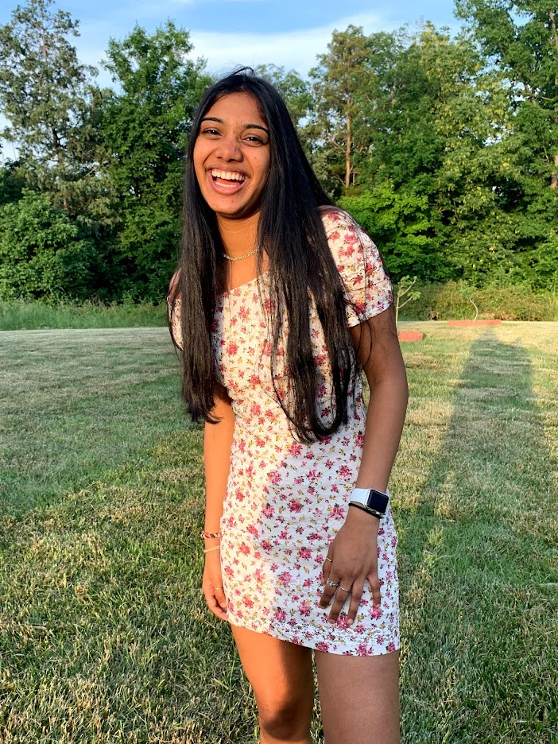
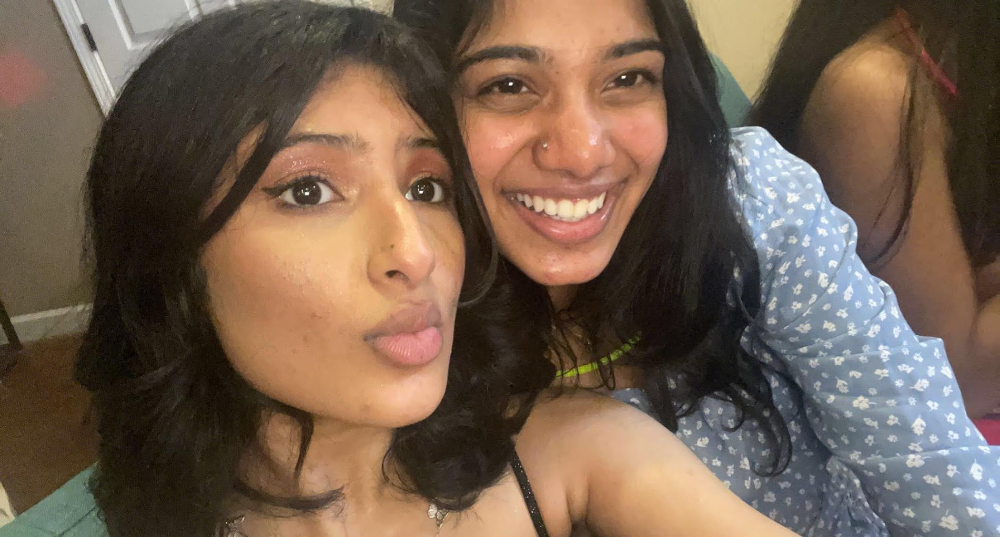
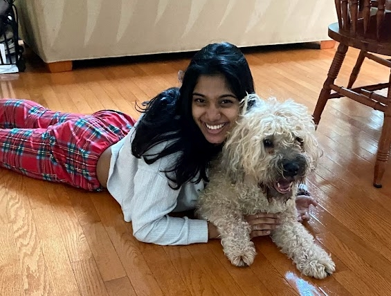

Introduction
Hi my name is Sanjana Argade. I am a senior at Cox mill High school. Some of the things I like to do in my free time is draw, write, eat, and sleep.
I am a swimmer and I have been swimming since I was 9 years old. I have been on a club swim team until my sophmore year of high school. I have been on my high school swim team for 3 years. My freshmen, sophmore, and senior year.
Interests
I really enjoy hanging out with my friends and I always have a good time when I am near them.Some of the things usually do is mostly get food. Some inclue, Crumbl Cookies, Insomnia Cookies, Chic Fil A, and many others.
Some of my other interests consist of reading, wrting, drawing, etc... I usually don't get time to do these things only because of my school work. But on the days I do have some down time I really enjoy reading Colleen Hoover. I like writing but specifically speaking I enjoy journaling. In doing so I am able to not only write down what I am feeling But I am able to figure out who I am as a person.
Extra
 I babysit and dogsit here and there and I really ejoy doing both. I have wanted a dog for years now but that wasn't possible but I know for a fact when I am older I will own one. This year I had recently been into cats. I love cats and I used to be anti-cat before. But I know for a fact I want a cat also.
Ever since I was younger I always knew what I wanted. Not necessarily what I wanted to do in life but the things I wanted to have and achieve. I want to live in a big city and I want to own at least one dog and one cat and a fish. I am into interior design but only for fun and I don't see myself persuing something in that, same goes for drawing. I want to travel the world. My family and I have been travelling for many years now. I have gotten the amazing opportunity to visit many countries and I would love to continue the journey as I get older.